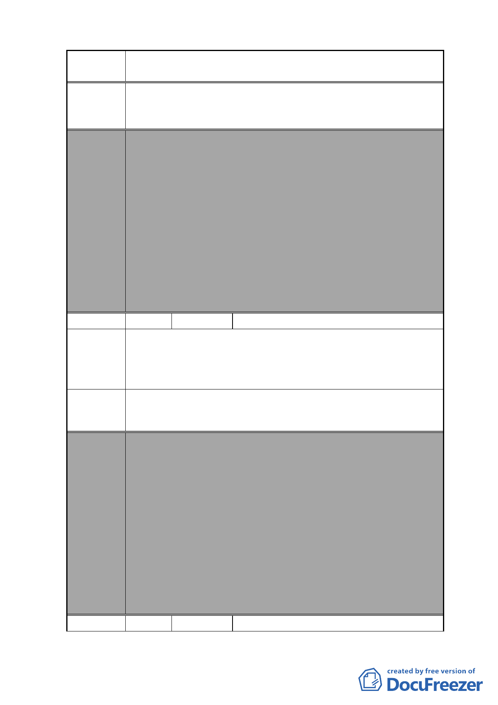

案 名 變更復興北路與長安東路口東北側第三種住宅區為第三種住
宅區（特）細部計畫案
請將陳情地號 443、443-1、443-2、173-3 土地納入鄰地 449-3
建議辦法 地號之「2010 年臺北好好看」申請案基地範圍內，以達到整
體市容觀瞻之美化與提昇。
委員會
決議
本案除以下幾點應再作修正外，其餘依市府本次會議所送修
正計畫書及專案小組審查意見回應資料內容通過。
1.本案有關都市設計管制規定，名稱請統一為都市設計管制
「準則」。
2.計畫書第 31 頁（四）第 1 點有關地下開挖率規定，請予刪
除，依現行市府通案處理原則辦理。
3.計畫書「其他」項內增列「所申請之容積獎勵面積後續於
完成都市設計審議核備及領取建築執照後不得任意變更設
計，如後續確有需要辦理變更設計者，則該部分獎勵面積
須重新審查，若已完成超過部分之獎勵容積樓地板施工
者，則不予核發該部分之使用執照」等文字敘述，以為周
延。
編號
陳情理由
建議辦法
2 陳情人 臺灣省農會
本會座落於台北市松山區敦化段 2 小段 444 地號土地，因緊
鄰合作金庫銀行所屬 449-3 地號土地，屬同一區塊，應響應
市府未加速推動老舊地區再生及注入城市競爭活力而推行之
「促進都市再生 2010 年臺北好好看」開發計畫。
申請將本會上開土地納入市府細部計畫變更範圍內。
委員會
決議
編號
本案除以下幾點應再作修正外，其餘依市府本次會議所送修
正計畫書及專案小組審查意見回應資料內容通過。
1.本案有關都市設計管制規定，名稱請統一為都市設計管制
「準則」。
2.計畫書第 31 頁（四）第 1 點有關地下開挖率規定，請予刪
除，依現行市府通案處理原則辦理。
3.計畫書「其他」項內增列「所申請之容積獎勵面積後續於
完成都市設計審議核備及領取建築執照後不得任意變更設
計，如後續確有需要辦理變更設計者，則該部分獎勵面積
須重新審查，若已完成超過部分之獎勵容積樓地板施工
者，則不予核發該部分之使用執照」等文字敘述，以為周
延。
3 陳情人 詹陳麗、王惠枝
- 75 -